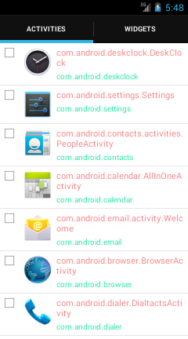
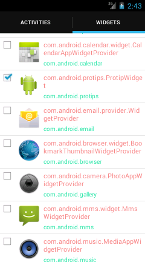
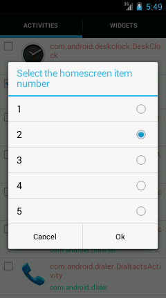
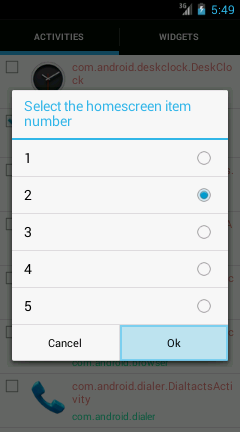
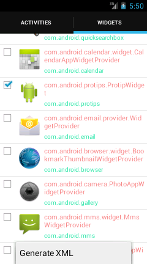
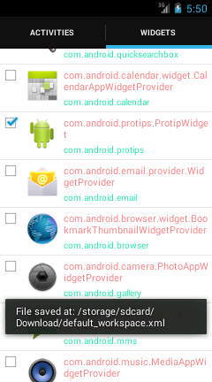

Workspace Generator
This applications aims to help developers that works with Android Customization. It provides a easy way to choose your widget and shortcut application for your Android HomeScreen. Using it, you easily generate your default_workspace.xml, file resposible to store homescreen configuration.
To generate your file you just need do some steps:
Step 0 - Install all application and widget that you can put on Android Homescreen
Step 1 - Lunch your application:

Step 2 - Select application and widgets:

Step 3 - For each application and wiget, select the homescreen number:

Step 4 - Generate default_workspace.xml:

Step 5 - Your xml will be saved at: /storage/sdcard/Download/default_workspace.xml

Step 6 - Get your file using adb:
adb pull /storage/sdcard/Download/default_workspace.xml